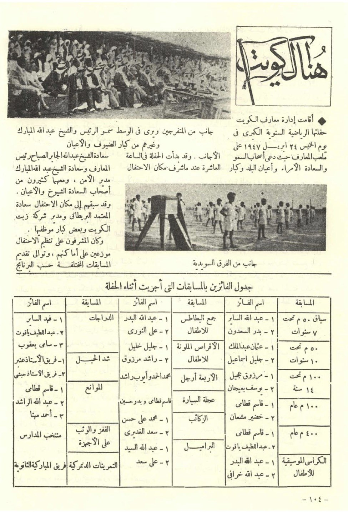
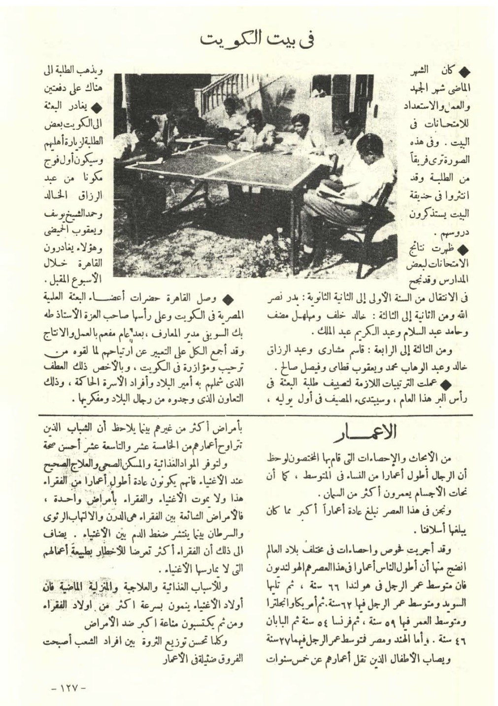
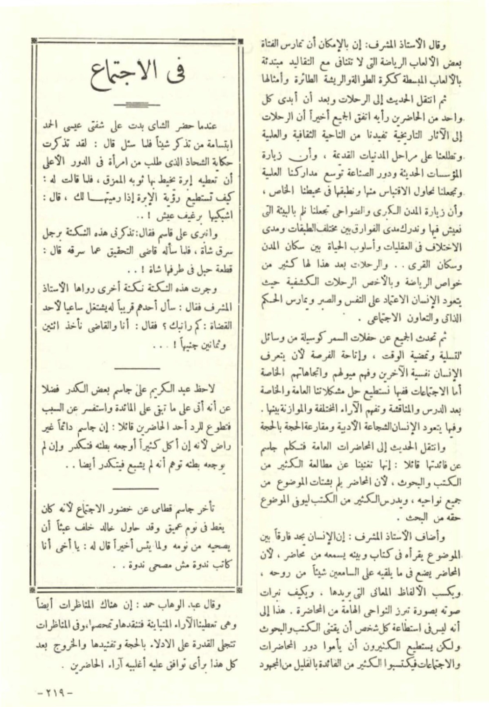
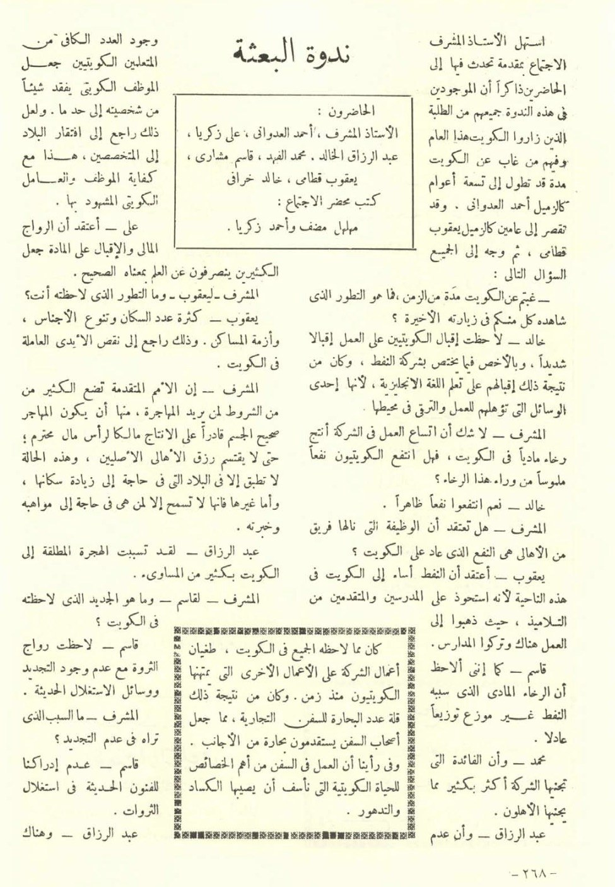
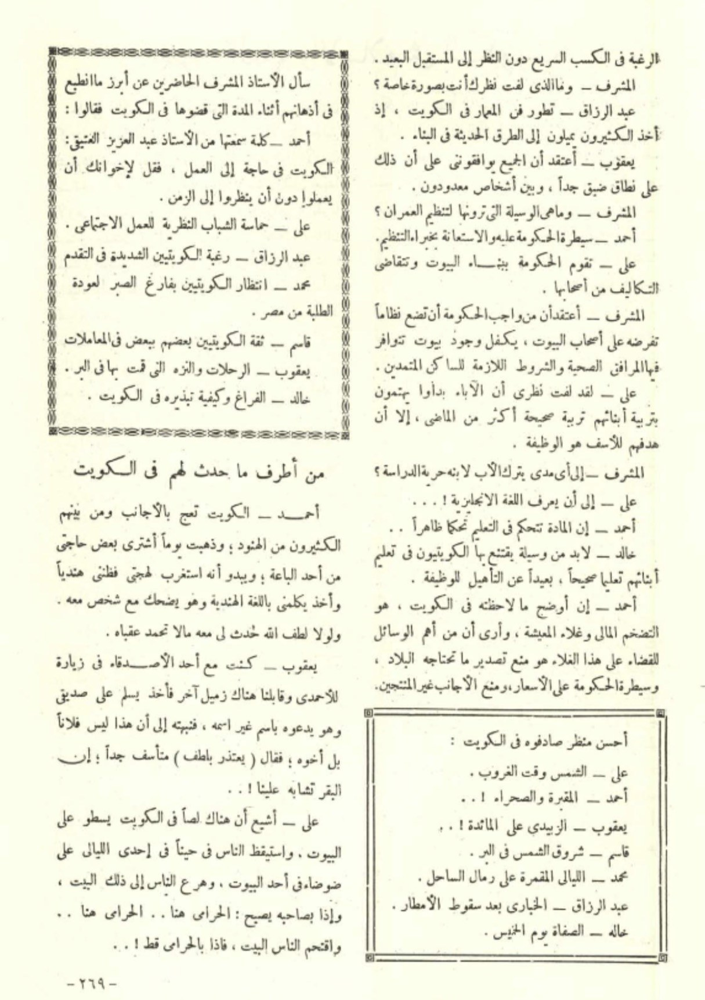
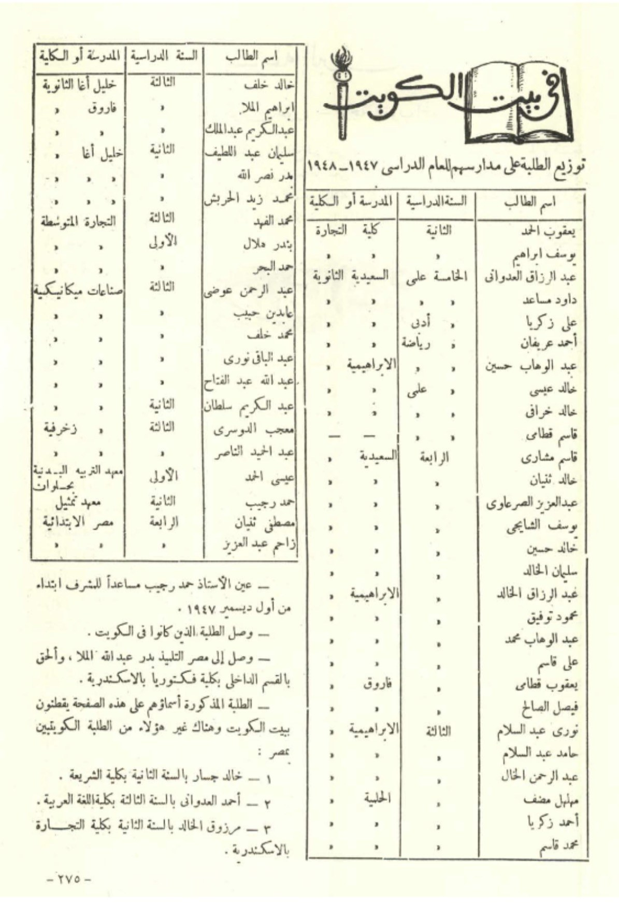

المجلد الأول، السنة الأولى (١٩٤٦ إلى ١٩٤٧م) · صفحات من «البعثة»، نشرة ثقافية شهرية يصدرها بيت الكويت بمصر، المجلد الأول، السنة الأولى، جمعها وأعاد طباعتها مركز البحوث والدراسات الكويتية ١٩٩٧م
البعثة، المجلد الأول: جاسم ويعقوب القطامي بين الطلبة الكويتيين في القاهرة
ما هي
تذكر السنة الأولى من «البعثة» شابين من العائلة بين الطلبة الكويتيين. ١. جاسم قطامي يهنئ النشرة بصدورها (ص ٣١)، وتندبه لإجراء أحاديث مع رجال الرأي في الكويت (ص ١٠٦)، ويشارك في ندوتها ويسأل لماذا لا تطبق الرياضة في مدارس البنات (ص ٢١٨)، ويستعد لامتحان التوجيهية تمهيدا لالتحاقه بكلية الطب (ص ٢٢٦)، ويتحدث في الندوة عن المحاضرات العامة (ص ٢١٩)، ويشارك في التمثيل في حفل الهجرة يوم ١٤ نوفمبر ١٩٤٧م (ص ٢٥٠). ٢. «قاسم قطامي»، والأرجح أنه جاسم بخطأ مطبعي، يفوز في سباقي ١٠٠ م و٤٠٠ م والموانع في حفل المعارف الرياضي يوم ٢٤ أبريل ١٩٤٧م (ص ١٠٤)، ويرد اسمه بين الطلبة القادمين إلى مصر لدراسة الطب (ص ١٢٢)، ويكتب إلى النشرة (ص ١٣٢). ٣. يعقوب قطامي يتحدث في ندوة ٢٤ أبريل ١٩٤٧م (ص ١٠٨ و١٠٩) وفي ندوة الطلبة الذين زاروا الكويت بعد غياب عامين (ص ٢٦٨ و٢٦٩)، وينجح من السنة الثالثة إلى الرابعة (ص ١٢٧)، ويدرس في العام ١٩٤٧ إلى ١٩٤٨م في مدرسة فاروق (ص ٢٧٥)، حيث يرد اسم «قاسم قطامي» أيضا.
أهميتها
توثيق معاصر لجاسم عبدالعزيز القطامي ويعقوب يوسف القطامي طالبين في بعثة الكويت بالقاهرة عام ١٩٤٧م.
من المقصود
جاسم قطامي هو جاسم عبدالعزيز القطامي، و«قاسم قطامي» الأرجح أنه جاسم نفسه بخطأ مطبعي كما يرجح فهرس البعثة، لتطابق خبر دراسة الطب. ويعقوب قطامي هو يعقوب يوسف القطامي الوارد اسمه كاملا في مواضع أخرى من البعثة.
صور الصفحات














المصادر
البعثة، المجلد الأول، السنة الأولى، أعاد طباعتها مركز البحوث والدراسات الكويتية، الكويت ١٩٩٧م، ص ٣١ و١٠٤ و١٠٦ و١٠٨ و١٠٩ و١٢٢ و١٢٧ و١٣٢ و٢١٨ و٢١٩ و٢٢٦ و٢٥٠ و٢٦٨ و٢٦٩ و٢٧٥
كيف كُتب هذا النص: الصفحة ٥٤ لا تذكر العائلة. ويذكر الفهرس «قاسم قطامي» في الصفحتين ١٢٩ و١٤١، لكنهما لقاسم مشاري، فلم تعرضا.
افتح في الموقع التفاعلي